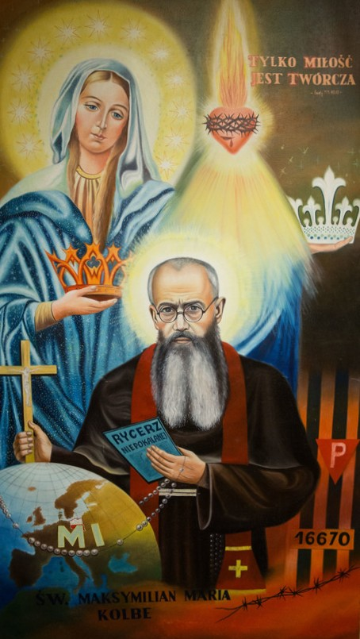

Hazte miembro

Milicia de la Inmaculada
Ella te aplastará la cabeza (refiriéndose a la serpiente). (Gén 3, 15)
Tú sola has vencido todas las herejías en todo el mundo. (Oficio de la Virgen)
La MI está imbuida del espíritu de la "Sociedad de la Madre de Dios" como la describió Grignion. Incluye laicos y consagrados a Dios. Las reglas son tan breves y sencillas que pueden vivirse en toda familia, toda comunidad, toda orden religiosa! En una carta a un hermano en Roma en 1918,
el P. Maximiliano escribe:
¡Queridísimo hermano! Escribo esta tarjeta el día de la revelación de la Inmaculada Virgen María de la Medalla Milagrosa […] Nuestra Suprema Señora Inmaculada se ha dignado, tras un año de expectativa, duda e incertidumbre de nuestra parte, determinar la regla para su "Milicia" como sigue:
I. Meta
La conversión de pecadores, herejes, cismáticos, etc., especialmente los masones; y la santificación de todos, bajo el reinado y mediante la mediación de la Inmaculada.
II. Condiciones
Consagración total a la Inmaculada, dándose como instrumento en sus manos.
Llevar la "Medalla Milagrosa".
III. Medios
Invocar a la Inmaculada cuantas veces sea posible cada día con esta oración jaculatoria: Oh María, concebida sin pecado, ruega por nosotros que recurrimos a Ti, y por todos los que no recurren a Ti, especialmente por los masones.
Usar todos los medios legítimos en la medida de lo posible, en los diversos estados y circunstancias de la vida, en las oportunidades que se presenten: esto queda al celo y prudencia de cada uno; pero el medio especial es la difusión de la Medalla Milagrosa.¹
¹ Las reglas fueron escritas por el P. Kolbe en latín, la lengua de la santa Iglesia, por así decir la lengua eternamente válida. (Véase p. 12)
¿Cómo me hago miembro del MPL?
Para ser miembro del MPL, es importante primero informarse sobre la espiritualidad de nuestro movimiento apostólico.
Todo aquel que se sienta llamado y esté dispuesto a contribuir concretamente a los objetivos del MPL es cordialmente bienvenido entre nosotros.
¿Qué más necesito saber?
Sin cuotas de membresía
Sin cuotas
Sin boletines o circulares regulares
Se celebra una Santa Misa mensualmente por los miembros vivos y difuntos y bienhechores del MPL.
Reciben también de manera especial parte de los frutos espirituales del MPL.
Inscripción por escrito a:
Marianische Priester- und Laienbewegung zum Triumph der Vereinten Herzen Jesu und Mariens e.V.
Postfach 1118, 77732 Zell a. H.
Inscripción por correo electrónico:
contact@mpl-apostolate.com